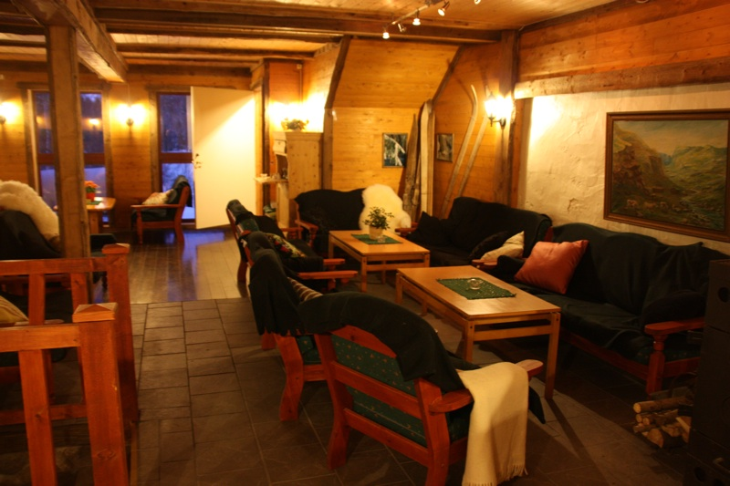

Hvem er vi som er foredragsholdere og arrangører?
Foredragsholdere

Ekteparet Svein Aarholt og Ingfrid Weydahl. Hun er lærer med bl.a sosialantropologi og adm. og ledelse. Han er prest / teolog med adm. og ledelse. De har selv vært på fire forskjellige typer samlivskurs opp igjennom årene de har vært gift. De er begge utdannet som PREP foredragsholdere via Modum Bads "Senter for familie og samliv" (tidl. Samlivssenteret), og har hatt disse kursene på Aarholt-tunet Gjestegård siden mars 2001. Over 1500 par har de kurset i dette tidsrommet, og de har også vært innleid som foredragsholdere på "Modum Bads Senter..." sine egne Prep-kurs på Vikersund.
Organisasjonen "Voksne for Barn"
"Voksne for Barn" har som ett av sine satsningsområder å gjøre det lettere tilgjengelig for voksne å pleie sitt samliv. En enkel filosofi ligger til grunn: ”Når de voksne har det bra, så har barna det bra”. "VfB" satser derfor på å arrangere samlivskurs, i samarbeid med "Senter for familie og samliv", - på Aarholt-tunet Gjestegård, som et permanent tiltak.
 Organisasjonen "VfB" søker "Barne-, ungdoms- og familiedir." om tilskudd til PREP samlivskurs, og har fått tilskudd til kursene.
Organisasjonen "VfB" søker "Barne-, ungdoms- og familiedir." om tilskudd til PREP samlivskurs, og har fått tilskudd til kursene.
Litt om stedet
”Aarholt-tunet Gjestegård” er drevet av ekteparet Ingfrid Weydahl og Svein Aarholt – som også er foredragsholdere. Gården har vært i familiens eie siden tidlig på 1500-tallet. I tillegg til å være en kurs- konferanse- og gjestegård, tar stedet imot bedrifter, organisasjoner og foreninger som ønsker egne arrangement, samt bondegårdsferie for familier om sommeren og leirskole vår og høst, hvor også utvikling av mennesker er visjonen.

{kind=link}
{kind=link}
Innkvartering skjer i nyrestaurerte rom i Bryggerhus, låve, to tømmerhytter (bildet over til venstre) og to stabbur. Ingen rom er like. Alle rom har sitt særegne preg ut fra en gjenbruksfilosofi hvor gammelt og nytt er mikset. Stedet har spennende innredet forsamlingsrom: Amfi i løa (bilder i høyre marg) og stuer i det gamle fjøset (bildet over til høyre).
{kind=link}
Bespisning skjer i 2.etg. i den gamle restaurerte låven på ”Bondesalen”. Stedet har ikke skjenkebevilling, noe mange kursgrupper setter pris på.
{kind=link}